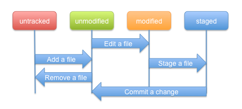

| Concepts | ||
|---|---|---|
|
|
|
|
| EGit User Guide | Tasks | |
Git is built on a few simple and very powerful ideas. Knowing them helps to understand more easily how git works.
The Repository or Object Database stores all objects which make up the history of the project. All objects in this database are identified through a secure 20 byte SHA-1 hash of the object content. This has several advantages:
Git has four object types :
The object database is stored in the .git/objects directory. Objects are either stored as loose objects or in a single-file packed format for efficient storage and transport.
Trust
Git provides a built-in trust chain through secure SHA-1 hashes which allows it to verify if objects obtained from a (potentially untrusted) source are correct and have not been modified since they have been created.
If you get the signed tag for e.g. a project release which you can verify with e.g. the tagger's (the project lead's) public signing key, git ensures that the chain of trust covers the following:
All of the involved object names can be checked for consistency using the SHA-1 algorithm to ensure the correctness of the project revision and that the entire history can be trusted.
The
Git Index is a binary file stored in the .git/index directory containing a sorted list of file names, file modes, and file meta data used to efficiently detect file modifications. It also contains the SHA-1 object names of blob objects.
It has the following important properties:
A branch in Git is a named reference to a commit. There are two types of branches, namely "Local" and "Remote Tracking" branches which serve different purposes.
Whenever a change to a (local) Repository is committed, a new commit object is created. Without any other means, it would be very difficult to keep track of the changes in the Repository, in particular when other commits are added to the Repository, for example due to an update from the remote Repository or when checking out another commit.
A local branch helps with this task by providing a (local) name by which the "current" commit can be found. When changes are committed to the local repository, the branch is automatically updated to point to the newly created commit.
In addition, it is possible to add a so-called upstream configuration to a local branch which can be helpful when synchronizing with a remote repository.
Remote tracking branches are created automatically when cloning and fetching from remote repositories. A remote tracking branch in the local repository always corresponds to a (local) branch in the remote repository. The name of such a branch follows certain conventions.
The remote tracking branch points to the same commit as the corresponding branch in the remote repository (at the time of the clone/fetch).
Remote tracking branches can be used for automated creation of upstream configuration for local branches.
The working directory is the directory used to modify files for the next commit. By default it is located one level above the .git directory. Making a new commit typically involves the following steps:
You start from a fresh checkout of a branch of a local repository. You want to do some changes and record snapshots of these changes in the repository whenever you reach a state you want to record.
Each file in the working directory can either be tracked or untracked:
When you first clone a repository, all files in the working directory will be tracked and unmodified since they have been freshly checked out and you haven't started editing them yet.
As you edit files, git will recognize they are modified with respect to the last commit. You stage the modified files into the index and then commit the staged changes. The cycle can then repeat.
This lifecycle is illustrated here:

|
|

|
|
| EGit User Guide | Tasks |